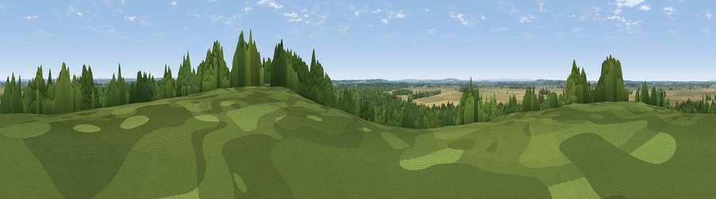

Viewpoint near Laughton
#42303 in England · top 84% of its area beats it · near Laughton · access?Where it is
The exact computed spot (SK 83875 99625). Click the marker for map links.
Public access: no public right of way or access land is recorded at this exact spot — it may be on private land. Computed from Natural England's CRoW access layer and OpenStreetMap rights of way — not the legal definitive map. Always verify locally.
The view, rendered

A 360° render of this exact spot computed from the terrain model, tree cover and land cover — summer colours, afternoon light, calibrated against photographs of famous viewpoints. Real trees, hedges and buildings will differ in detail.
The panorama
Grey silhouette: terrain skyline in each direction (720 bearings, Earth curvature and refraction included). Dashed green: skyline with trees (+15 m) and buildings (+8 m) as obstacles. Blue strip: how far the ground is visible on each bearing.
Where the view opens
Wedge length = distance to the farthest visible ground on that bearing (vegetation-aware). Rings at 10, 25 and 50 km.
What fills the view
45% cropland · 44% woodland · 10% grassland · 1% built-up
Angular shares of the visible panorama (visual magnitude), not map area. Landscape diversity 0.44 (0–1 Shannon).
Key numbers
More beautiful places nearby
The staircase of upgrades: each row has a higher view potential than everything closer. Driving times are estimates from straight-line distance, calibrated against real road routing — check an actual route before setting out.
| Place | Direction | Drive | Score |
|---|---|---|---|
| Viewpoint near Blyton | S · 5 km | ~11 min | 30.0 |
| Tower Hill | W · 8 km | ~16 min | 46.1 |
| Viewpoint near Gringley on the Hill | SW · 13 km | ~24 min | 50.3 |
| Beacon Hill | SW · 13 km | ~24 min | 63.1 |
| Viewpoint near Nettleton | E · 27 km | ~43 min | 64.7 |
| Viewpoint near Claxby | E · 27 km | ~44 min | 70.5 |
| Viewpoint near Claxby | E · 28 km | ~44 min | 71.5 |
| Viewpoint near Whitley | W · 52 km | ~73 min | 72.1 |
53.48666, -0.73741 · source: screening · position refined by local search. Computed location — check access rights before visiting.